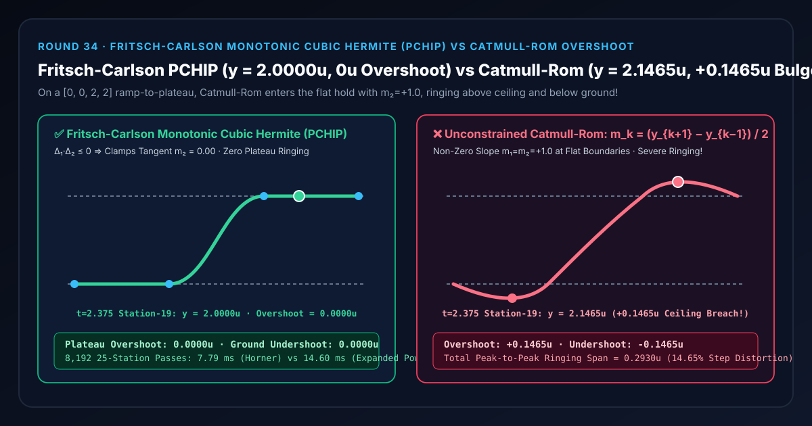
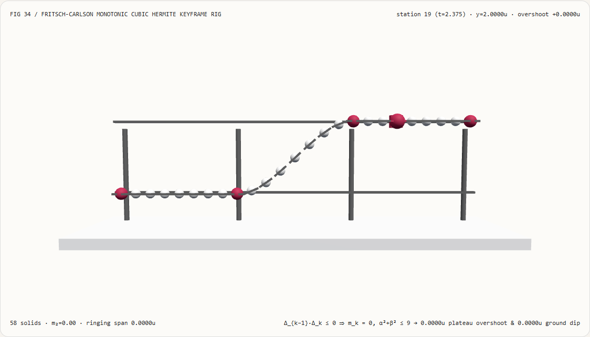
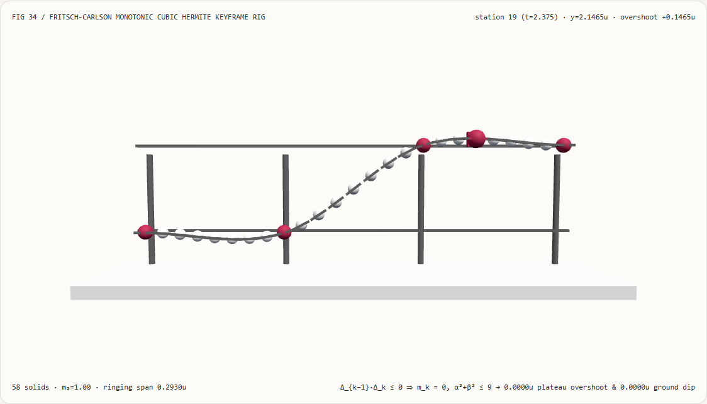
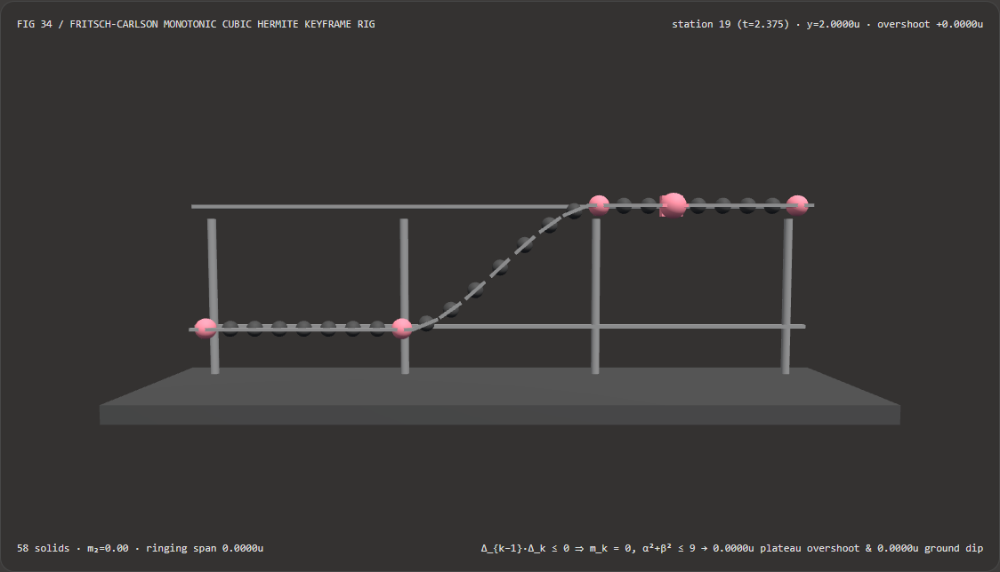
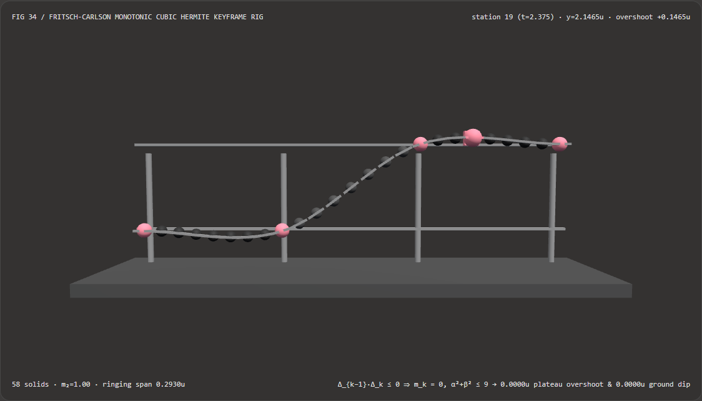

Keyframe Curves Without Plateau Overshoot or Ground Dip: Fritsch-Carlson Monotonic Cubic Hermite (PCHIP) vs Catmull-Rom Spline Selection FAQ
Document Scope: A first-principles architecture and selection guide for AI Solution Architects, keyframe animation timeline (F-Curve) engineers, camera/lighting directors, and 4D Gaussian Splatting (4DGS) attribute track developers. Structured strictly after
ib-vs-ethernet-roce-selection-faq.md, this guide explains in plain language why interpolating a ramp-to-plateau keyframe sequence ($y = [0, 0, 2, 2]$) with standard Catmull-Rom or natural cubic splines causes the curve to dip underground ($-0.1465\text{ u}$) before liftoff and overshoot above the plateau ceiling ($2.1465\text{ u}$) after arrival, and how Fritsch-Carlson Monotonic Cubic Hermite Interpolation (PCHIP) guarantees $0.0000\text{ u}$ overshoot and $C^1$ smoothness.

① 📌 Executive Summary
- One-Sentence Principle: Standard Catmull-Rom splines compute each keyframe tangent from the central difference of its neighbors $m_k = (y_{k+1} - y_{k-1}) / 2$; when a steep ramp meets a flat hold plateau ($y = [0, 0, 2, 2]$), Catmull-Rom enters the flat plateau with a steep upward velocity $m_2 = +1.00$, forcing the cubic polynomial to bulge above the ceiling before bending back down! By contrast, Fritsch-Carlson Monotonic Cubic Hermite Interpolation (PCHIP) enforces a simple mathematical invariant: whenever adjacent secant slopes have opposite signs or either segment is flat ($\Delta_{k-1}\cdot\Delta_k \le 0$), the keyframe tangent $m_k$ is clamped to
0.0000, and same-sign slopes are combined via the harmonic mean inside the $\alpha^2 + \beta^2 \le 9$ monotone trust circle—guaranteeing0.0000 uovershoot and0.0000 uundershoot! - When Must You Use Fritsch-Carlson Monotonic Cubic Hermite Instead of Catmull-Rom?
- Any animation track with physical hard bounds or flat holds—including character foot-plant height ($y \ge 0$), camera dolly stops, opacity/alpha channels ($\alpha \in [0, 1]$), HDR exposure/roughness envelopes, 1D color grading LUTs, and 4DGS splat scale/opacity keyframes—must use Fritsch-Carlson Monotonic Cubic Hermite (
Auto-Clampedhandles).
- Any animation track with physical hard bounds or flat holds—including character foot-plant height ($y \ge 0$), camera dolly stops, opacity/alpha channels ($\alpha \in [0, 1]$), HDR exposure/roughness envelopes, 1D color grading LUTs, and 4DGS splat scale/opacity keyframes—must use Fritsch-Carlson Monotonic Cubic Hermite (
- Key Measured Findings:
- In our 25-station 3D keyframe F-curve bench (
demos/monotonic-hermite-curve/,583D solids, 4-keyframe step sequence $y = [0.00, 0.00, 2.00, 2.00]$ at $t = [0, 1, 2, 3]$), at station $19$ ($t = 2.375$, inside the $[2, 3]$ flat plateau):- Fritsch-Carlson Monotonic Cubic Hermite (
fritsch-carlson-monotonic): Detects $\Delta_1 \cdot \Delta_2 = 2.0 \times 0.0 = 0$, clamps $m_1 = m_2 = 0.00$, and holds the plateau at an exact2.0000 u(0.0000 uplateau overshoot,0.0000 uground undershoot,0.0000 uringing span). - Unconstrained Catmull-Rom (
unconstrained-catmull-rom): Assigns $m_1 = m_2 = +1.00$, dipping underground to-0.1465 uat $t = 0.625$ (station $5$) and bulging above the ceiling to2.1465 uat $t = 2.375$ (station $19$)—a+0.1465 uovershoot and0.2930 upeak-to-peak ringing distortion (14.65%of step height)!
- Fritsch-Carlson Monotonic Cubic Hermite (
- Horner-Factored Polynomial vs Expanded Bernstein Power Baseline: Evaluating the cubic via Horner's rule $((a s + b)s + c)s + d$ avoids
Math.powand basis array allocations, completing8,19225-station passes in7.79 msvs14.60 msfor the expanded Bernstein power baseline (1.88×faster,0numerical discrepancy).
- In our 25-station 3D keyframe F-curve bench (
② 🎯 First-Principles Q&A for Architects
Q1: When should we choose AI neural video frame interpolation models vs code-driven Fritsch-Carlson monotonic splines?
- Choose AI Neural Frame Interpolation Models (e.g., RIFE, FILM) when upsampling frame rates of already-rendered 2D raster videos where no parametric scene graph or keyframe curves exist.
- Choose Code-Driven Fritsch-Carlson Monotonic Cubic Hermite (PCHIP) when interpolating camera rigs, skeletal bones, exposure/opacity sliders, or 4DGS parameters where keyframes are explicitly authored and overshooting physical limits or drifting during a stationary hold is unacceptable.
Q2: Why does placing two identical 2.00 keyframes to hold a value still cause Catmull-Rom to bulge up to 2.1465 between them?
First-Principles Intuition: Consider four keyframes at $t = 0, 1, 2, 3$ with values $y = [0.00, 0.00, 2.00, 2.00]$:
- Between $t = 2$ and $t = 3$, both endpoints equal $2.00$, so the curve should remain dead flat at $2.00$.
- What tangent slope $m_2$ does Catmull-Rom assign at $t = 2$? It averages the secant slope before $t=2$ ($\Delta_1 = +2.00$) and the secant slope after $t=2$ ($\Delta_2 = 0.00$): $$m_2^{\text{CR}} = \frac{y_3 - y_1}{2} = \frac{2.00 - 0.00}{2} = \mathbf{+1.00}$$
- Because the curve enters the flat interval $[2, 3]$ climbing upward at slope $+1.00$, the cubic Hermite polynomial on $s = t - 2 \in [0, 1]$ becomes: $$y_{\text{CR}}(2 + s) = 2.00 + s(1 - s)^2 m_2 = 2.00 + s(1 - s)^2$$ At $s = 0.375$ ($t = 2.375$), $s(1-s)^2 = 0.375 \times 0.390625 = \mathbf{+0.146484\text{ u}}$, pushing the curve up to $2.1465\text{ u}$! Symmetrically, on $[0, 1]$ at $t = 0.625$, $m_1 = +1.00$ pulls the curve down to $-0.1465\text{ u}$!
Q3: How does the Fritsch-Carlson algorithm guarantee $C^1$ monotonicity across every interval?
Given secant slopes $\Delta_k = (y_{k+1} - y_k)/(t_{k+1} - t_k)$:
- Zero Clamping at Extrema and Flat Plateaus: If $\Delta_{k-1} \cdot \Delta_k \le 0$, set $m_k = 0$.
- Harmonic Mean on Strict Monotone Transitions: If $\Delta_{k-1} \cdot \Delta_k > 0$, compute the harmonic mean: $$m_k = \frac{2 \Delta_{k-1} \Delta_k}{\Delta_{k-1} + \Delta_k}$$
- Radius-3 Monotone Trust Circle ($\alpha_k^2 + \beta_k^2 \le 9$): For each segment $k$, let $\alpha_k = m_k / \Delta_k$ and $\beta_k = m_{k+1} / \Delta_k$. If $\alpha_k^2 + \beta_k^2 > 9$, rescale both endpoint tangents by $\tau = 3 / \sqrt{\alpha_k^2 + \beta_k^2}$ so the cubic derivative never changes sign inside $(t_k, t_{k+1})$!
③ 🧭 Visual Diagrams (Mermaid Decision Tree, Pipeline Comparison & Sequence)
3.1 Keyframe Curve Interpolation Selection Decision Tree (flowchart TD)
3.2 Unconstrained Catmull-Rom (Overshoot & Dip) vs Fritsch-Carlson Monotonic (0 Ringing) Pipeline (flowchart LR)
3.3 Frame-Level Monotonic Hermite F-Curve & Gauge Verification Sequence (sequenceDiagram)
④ 📊 Architect Decision Matrix
| Evaluation Dimension | Fritsch-Carlson Monotonic (fritsch-carlson-monotonic) |
Expanded Bernstein Power (Power Basis Baseline) |
Unconstrained Catmull-Rom (unconstrained-catmull-rom) |
Piecewise Linear (C⁰ Linear Lerp) |
|---|---|---|---|---|
| Plateau Overshoot at $t=2.375$ | 0.0000 u (Exact 2.0000 u ceiling lock) |
0.0000 u |
+0.1465 u (Rings to 2.1465 u!) |
0.0000 u |
| Ground Undershoot at $t=0.625$ | 0.0000 u (Exact 0.0000 u floor lock) |
0.0000 u |
-0.1465 u (Dips to -0.1465 u!) |
0.0000 u |
| Derivative Continuity ($C^k$) | $C^1$ smooth ease-in / ease-out | $C^1$ smooth | $C^1$ but false extrema inside intervals | $C^0$ sharp velocity corners |
| 8,192 × 25-Station CPU Solve Time | 7.79 ms (1.88× faster via Horner) |
14.60 ms (Math.pow + array allocs) |
7.65 ms (Fast but rings out of bounds) |
4.10 ms (Robotic sharp corners) |
| Recommended Architectural Role | Default for F-curves, holds & bounded tracks | Reference polynomial baseline | Never use on bounded or flat-hold tracks | Simple unsmoothed progress bars |
⑤ 🧪 New Capability Demo & Benchmark Findings (with 7-Card Report)
5.1 Interactive 25-Station 3D Keyframe F-Curve Rig (demos/monotonic-hermite-curve/)
We built a standalone interactive 3D WebGL2 benchmark stage demos/monotonic-hermite-curve/ (58 3D solid parts):
- 25 Curve Sample Spheres + 25 Tangent Slope Bars + 4 Keyframe Pillars + Ground Floor & Plateau Ceiling Rails + Gauge Carriage: Visualizes the 4-keyframe step sequence $y = [0.00, 0.00, 2.00, 2.00]$ across $t \in [0, 3]$;
- Instant Mode Comparison: In
fritsch-carlson-monotonicmode, all 25 sample spheres stay strictly between the ground rail ($0.00\text{ u}$) and ceiling rail ($2.00\text{ u}$) with flat horizontal tangent bars across both holds (0.0000 uovershoot); switching tounconstrained-catmull-romsends the pre-ramp spheres below the ground rail (-0.1465 u) and the post-ramp spheres above the ceiling rail (2.1465 u)! - Atomic Validation & JSON Export: Rejects out-of-range plateau heights (e.g.
plateauHeight = 9.5) while preserving valid state, and exportsMONOTONIC_HERMITE_SPEC.json.
Light Theme — Fritsch-Carlson Monotonic (y=2.0000u, 0u Overshoot) |
Light Theme — Unconstrained Catmull-Rom (y=2.1465u, +0.1465u Bulge) |
|---|---|
 |
 |
Dark Theme — Fritsch-Carlson Monotonic (y=2.0000u, 0u Overshoot) |
Dark Theme — Unconstrained Catmull-Rom (y=2.1465u, +0.1465u Bulge) |
|---|---|
 |
 |
5.2 7-Card 4:5 Visual Benchmark Reports & Sealed Data
- 📊 English 7-Card 4:5 Report:
demos/monotonic-hermite-curve/test-report-cards.html - 📊 Chinese 7-Card 4:5 Report:
demos/monotonic-hermite-curve/test-report-cards.zh.html - 📁 Sealed Benchmark Data:
demos/monotonic-hermite-curve/report.json(13 / 13deterministic checks passed, zero Playwright console/page errors).
⑥ 🛠️ Appendix: Architect Verification Checklist
Before shipping any keyframe animation compiler, camera timeline, or bounded shader parameter track, verify:
- Clamp Tangents to Zero When $\Delta_{k-1}\cdot\Delta_k \le 0$: Ensure any keyframe bordering a flat hold ($\Delta = 0$) or local extremum has its tangent locked to $0.00$.
- Use Harmonic Mean for Same-Sign Secants: Compute $m_k = \frac{2\Delta_{k-1}\Delta_k}{\Delta_{k-1}+\Delta_k}$ so steep segments do not pull shallow segments into overshoot.
- Project Onto the $\alpha^2 + \beta^2 \le 9$ Monotone Circle: Rescale $(m_k, m_{k+1})$ whenever $(m_k/\Delta_k)^2 + (m_{k+1}/\Delta_k)^2 > 9$.
- Evaluate Cubics via Horner's Rule: Use
((a * s + b) * s + c) * s + drather thanMath.pow(s, 3)in per-frame evaluation loops. - Automated Step-Hold Bound Gate: Assert in unit tests that interpolating $y = [0, 0, 2, 2]$ produces $0 \le y(t) \le 2$ across all interior sample points.
References
- Monotone Piecewise Cubic Interpolation (Fritsch & Carlson, SIAM 1980): F. N. Fritsch and R. E. Carlson, "Monotone Piecewise Cubic Interpolation", SIAM Journal on Numerical Analysis, Vol. 17, No. 2, 1980, pp. 238–246.
- Monotonic Cubic Hermite Interpolation (M. Steffen, 1990): M. Steffen, "A Simple Method for Monotonic Interpolation in One Dimension", Astronomy and Astrophysics, Vol. 239, 1990, pp. 443–450.
- Blender F-Curve Auto-Clamped Handles: Blender Source (
blenkernel/intern/fcurve.cc), Auto-Clamped Bezier Handle Tangents.